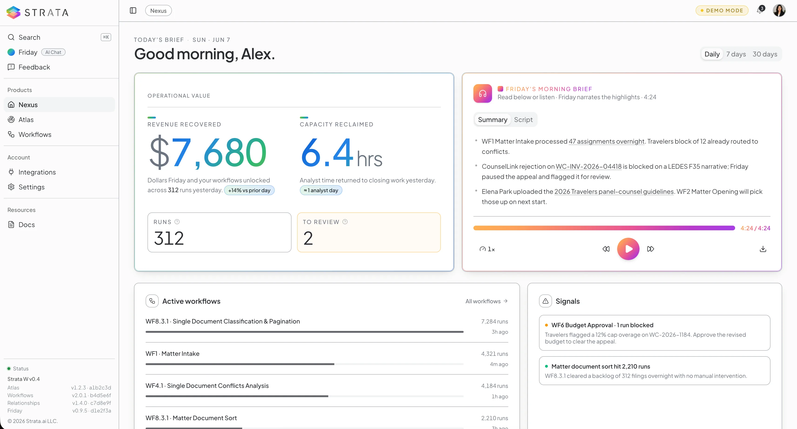

Strata Atlas
Where your firm’s operational map lives. Data sources connected, knowledge organized, ontology managed, workflows configured. The technical surface, operated by your innovation and IT teams alongside ours.
AI agents that run the operational work your firm doesn’t bill for. We turn it into recovered revenue and reclaimed capacity.

The platform, briefly
Where your firm’s operational map lives. Data sources connected, knowledge organized, ontology managed, workflows configured. The technical surface, operated by your innovation and IT teams alongside ours.
The executive dashboard. Operational Value at the top: Time Saved, Revenue Recovered. Every workflow’s health, every integration’s status, and a Morning Brief in your inbox. Built for the CIO, CFO, COO and Managing Partner.
The design surface for new automations. Workflows get built here, by our team and your SMEs together, before they’re promoted into production.
The engine underneath. Every workflow runs on it. Every dashboard reads from it. Every integration flows through it. One foundation for the work.
Every workflow we run is a named automation
with an owner and binary acceptance criteria.
We don’t lead with the AI. We lead with the numbers it moves.
Strata Nexus · Operational Value
Illustrative · Mid-size firm · Monthly
Revenue recovered
$428,610
Dollars collected that would have been written off. +18% MoM
Capacity reclaimed
1,284hrs
Hours returned to paralegals, billing, and intake. ≈ 12 FTE-weeks
13,000
Invoices a month, one client firm
That was the workload for one firm’s five-to-seven-person appeals team, and below the appeal threshold, the money got walked away from. Strata’s agents now analyze every line-item deduction and draft each appeal narrative for attorney review. Nothing is auto-submitted. The attorneys decide; the agents do the work that made deciding too expensive.
Invoice appeals is one named automation. The same platform runs billing follow-up, lateral onboarding, and trust accounting.
One client firm
Get started
Your firm has a write-off number. Let’s find it.
Approvals
Your team approves. Agents do the work.
Audit
Every run logged end to end.
Security
SSO · encrypted credentials · account isolation